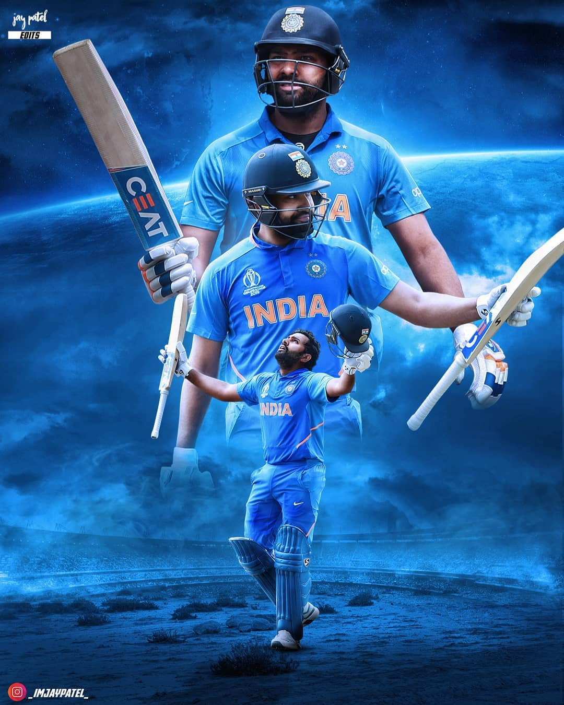

ROHIT SHARMA
Rohit Sharma married Ritika Sajdeh in December 2015. They have a daughter, born in December 2018.Sharma is noted for his philanthropic activities and promotes various causes such as animal welfare, health, and children. He is particularly vocal about the protection of animals and has supported various initiatives and organisations to promote the cause. Sharma has been sponsored by several brands including the Swiss watchmaker Hublot and CEAT. In his career spanning 11 years, Sharma has endorsed many other brands including Maggi, Fair and Lovely, Lay's, Nissan, energy drink Relentless, Nasivion nasal spray, Aristocrat by VIP Industries, Adidas and Oppo mobiles